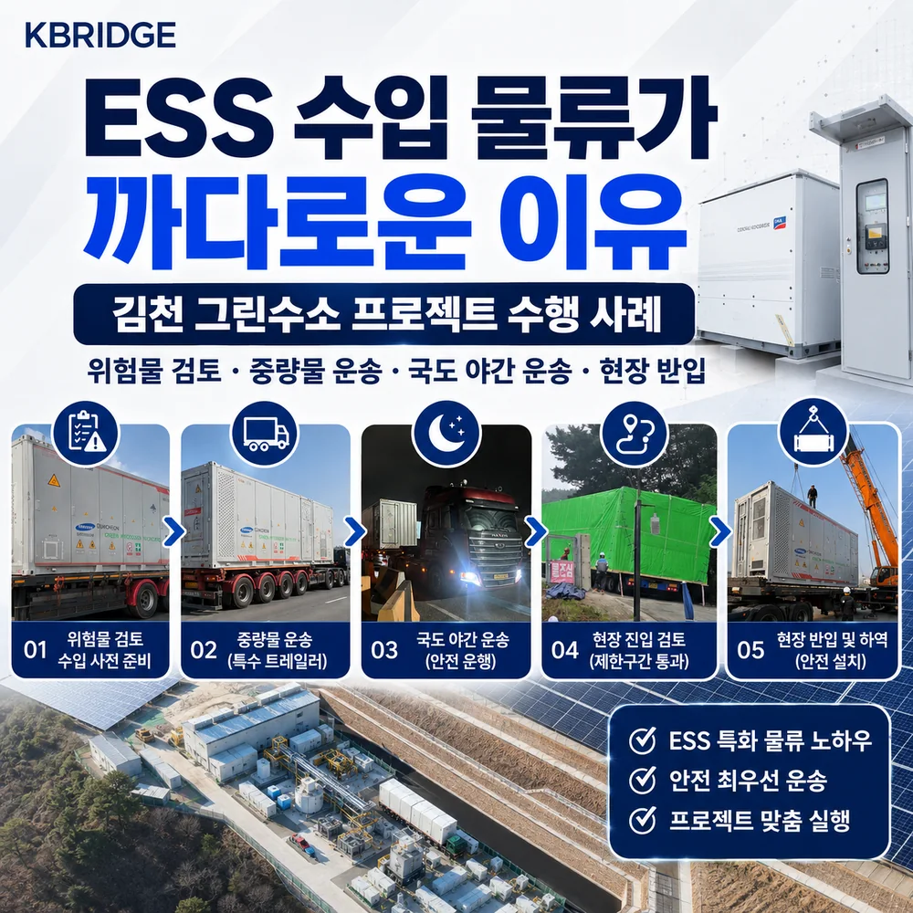
핵심 요약
ESS 수입은 일반 수입 화물처럼 선적·통관·배송만 나누어 진행하기 어렵습니다. 위험물 검토 + 정확한 화물 제원 + 중량물 운송 계획 + 최종 현장 반입 조건을 한 번에 연결해야 합니다. 김천 그린수소 프로젝트의 해당 ESS 화물은 제원과 운송 조건상 고속도로 운송이 불가능해 국도 루트를 사용했고, 주간 교통 부담과 안전 위험을 줄이기 위해 밤 10시 이후 야간 운송으로 진행했습니다.
ESS 수입은 위험물·중량물·현장 조건을 함께 봐야 합니다
ESS는 에너지저장장치로 신재생에너지 발전 설비와 수소 생산 인프라에서 전력을 저장하고 안정적으로 공급하는 핵심 장비입니다. 하지만 물류 관점에서는 단순 장비가 아닙니다. 배터리 시스템을 포함하는 경우가 많아 위험물 검토가 필요할 수 있고, 장비 자체의 크기와 중량 때문에 일반적인 운송 방식으로 진행하기 어려울 수 있습니다.
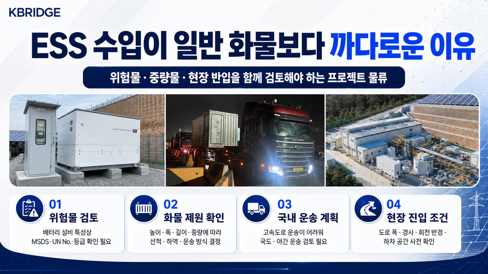
| 구분 | ESS 수입에서 중요한 이유 |
|---|---|
| 위험물 검토 | 배터리 설비 특성에 따라 MSDS, UN Number, 위험물 등급과 포장 조건을 확인해야 합니다. |
| 화물 제원 확인 | 높이, 폭, 길이, 중량에 따라 선적·하역·차량·운송 루트가 달라집니다. |
| 국내 운송 계획 | 고속도로 운송이 제한되거나 불가능한 경우 국도와 야간 운송을 별도로 설계해야 합니다. |
| 현장 진입 조건 | 발전 부지와 공사 현장은 진입로 폭, 경사, 회전 반경, 하차 공간 확인이 필수입니다. |
| 프로젝트 일정 | 선적·통관·운송·하역 중 한 구간의 지연이 전체 공정 일정에 영향을 줄 수 있습니다. |
1. ESS는 수입 전에 위험물 여부부터 확인해야 합니다
ESS는 배터리 모듈, 전력 변환 장치, 제어 장비 등을 포함할 수 있습니다. 제품 구성에 따라 위험물 운송 기준을 검토해야 하고, 선사나 운송사의 접수 조건도 일반 화물보다 까다로울 수 있습니다.
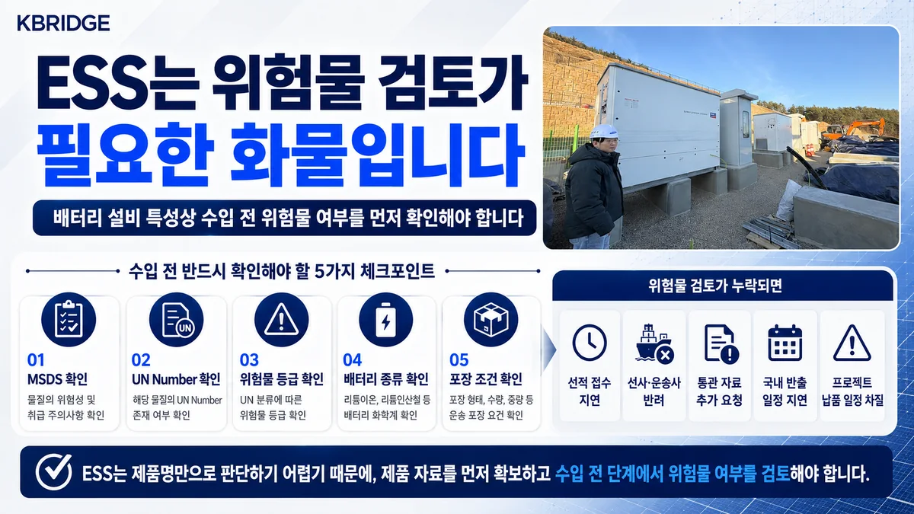
수입 전 최소 확인 자료
- MSDS와 제품 사양서
- UN Number와 위험물 등급
- 배터리 종류·구성·용량
- 포장 형태와 위험물 라벨링 조건
- 화물 제원과 총중량
- 선사·운송사의 선적 접수 가능 여부
- Invoice, Packing List, B/L 등 통관 서류
제품명만으로 위험물 여부를 판단하기 어렵습니다. 실제 구성과 용량, 포장 상태, 운송 조건에 따라 필요한 서류와 절차가 달라질 수 있으므로 선적 전에 확인해야 합니다.
2. 김천 그린수소 프로젝트에서 케이브릿지가 담당한 업무
케이브릿지는 김천 그린수소 프로젝트의 ESS 수입 물류를 담당했습니다. 이번 프로젝트에서는 위험물 여부와 서류 검토, 수입 통관, 중량물 운송 차량 수배, 국도 루트 검토, 밤 10시 이후 야간 운송, 현장 진입과 하역 조건 관리가 핵심이었습니다.
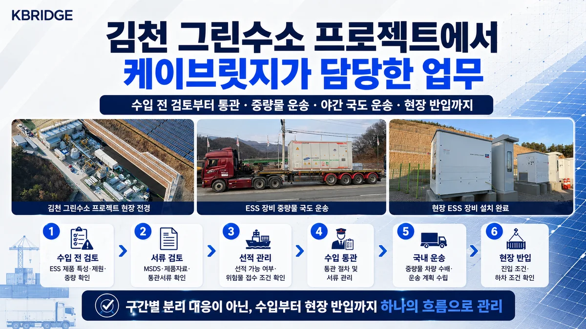
| 단계 | 주요 업무 |
|---|---|
| 수입 전 검토 | ESS 제품 특성, 제원, 중량, 위험물 여부 확인 |
| 서류 검토 | MSDS, 제품 자료, 통관 서류와 선적 조건 확인 |
| 선적 관리 | 선사·운송사 접수 가능 여부와 위험물 조건 확인 |
| 수입 통관 | 통관 서류 검토와 수입 절차 관리 |
| 국내 운송 | 화물 제원에 맞는 중량물 운송 차량 수배 |
| 루트 검토 | 고속도로 운송 가능 여부와 국도 운송 구간 확인 |
| 야간 운송 | 밤 10시 이후 운송 일정과 도착 시간 조율 |
| 현장 반입 | 진입로, 회전 반경, 하차 장비와 설치 일정 연계 |
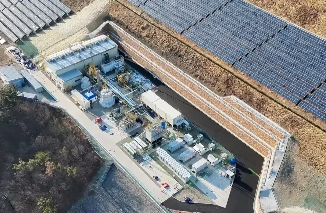
ESS 수입 물류는 단순 운송이 아니라 위험물 검토, 중량물 운송, 현장 반입 조건을 함께 관리해야 하는 프로젝트 물류입니다.
3. 중량물 ESS는 국내 운송 단계가 더 까다로울 수 있습니다
ESS처럼 크고 무거운 화물은 해외 운송과 통관이 끝난 뒤에도 변수가 많습니다. 장비의 높이·폭·길이·중량에 따라 일반 차량 운송이 어려울 수 있고, 고속도로 운행 가능 여부와 별도의 국도 루트를 확인해야 합니다.
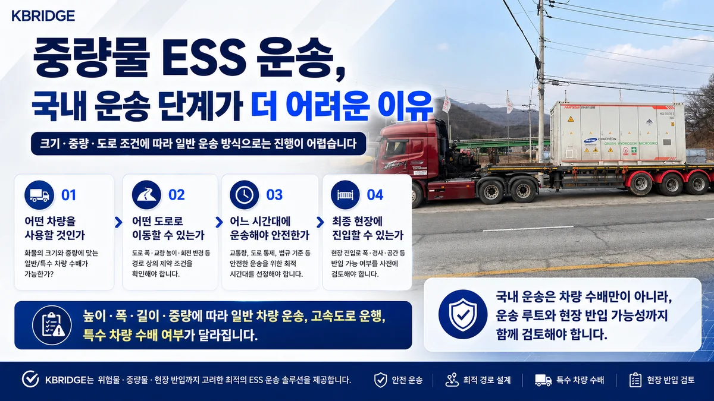
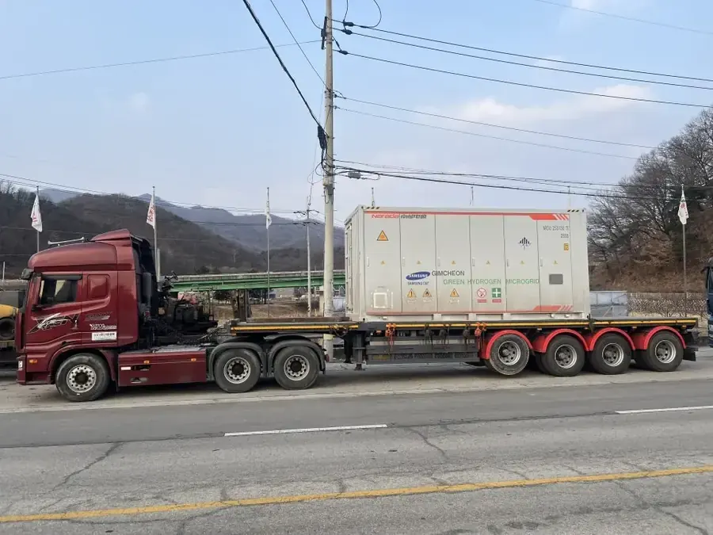
차량 적재 가능 제원과 하중, 운송 루트, 현장 진입 조건을 함께 확인합니다.
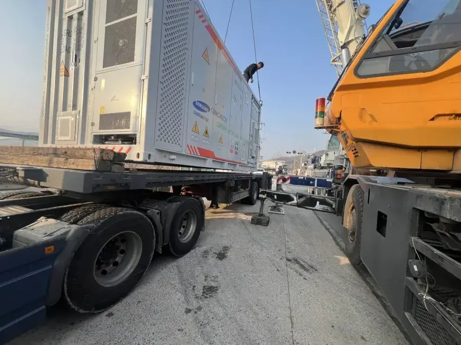
중량물 운송은 차량 수배만이 아니라 현장 하역 장비와 작업 시간까지 연결해야 합니다.
4. 고속도로 운송 불가 - 밤 10시 이후 국도 운송이 필요했던 이유
김천 그린수소 프로젝트의 해당 ESS 화물은 제원과 운송 조건상 고속도로 운송이 불가능했습니다. 따라서 국도 중심으로 운송 루트를 설계했고, 중량물 차량이 낮 시간대 교통에 미치는 부담과 사고 위험을 줄이기 위해 밤 10시 이후 이동 일정을 운영했습니다.
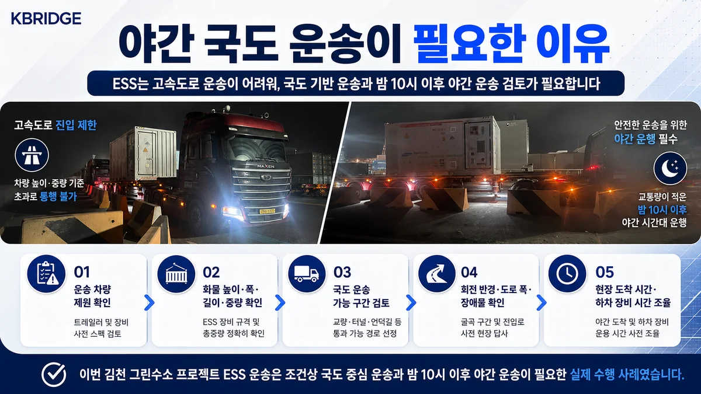
야간 국도 운송 전 확인한 조건
- 운송 차량과 트레일러 제원
- 화물 높이, 폭, 길이, 중량
- 국도 운송 가능 구간과 우회 루트
- 교량, 전선, 표지판 등 높이 장애물
- 도로 폭, 경사, 회전 반경
- 현장 도착 가능 시간과 대기 위치
- 크레인 등 하차 장비 투입 가능 시간
- 현장 작업 가능 시간과 담당자 협의
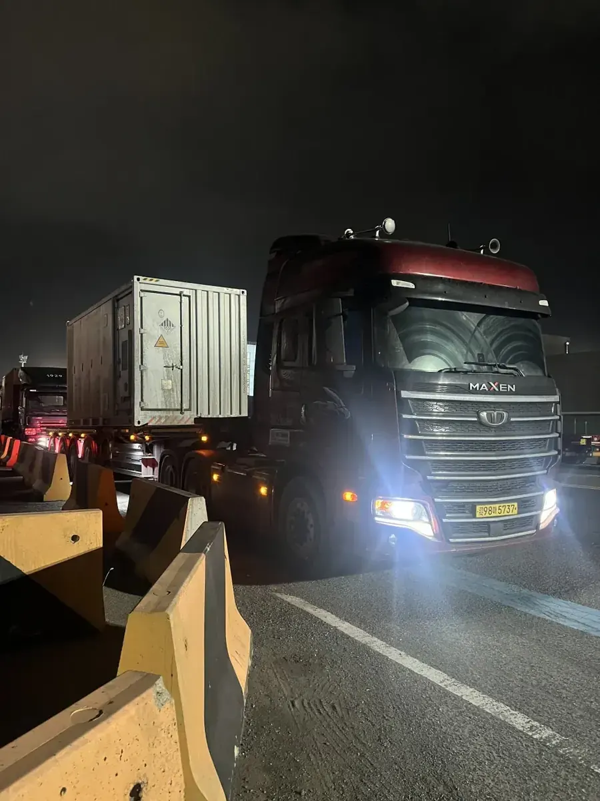
주간 교통 부담과 운송 중 변수를 줄이기 위해 야간 시간대를 활용했습니다.
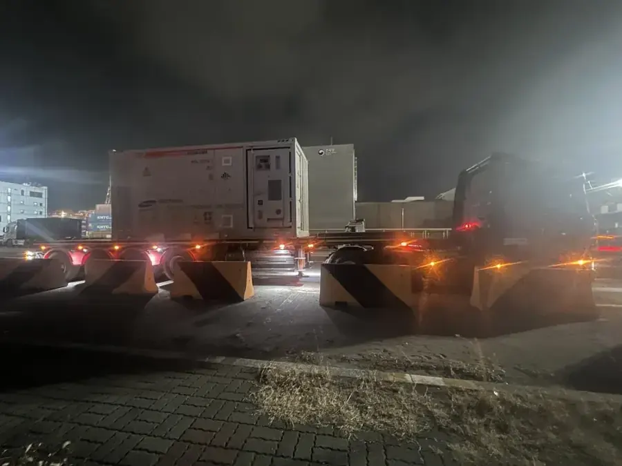
운송 구간과 현장 작업 가능 시간을 역산해 출발·대기·도착 일정을 조율했습니다.
5. 최종 납품지 조건이 프로젝트 물류의 핵심입니다
항만에서 화물을 반출했다고 해서 물류가 끝난 것은 아닙니다. 신재생에너지 프로젝트 현장은 일반 물류센터와 달리 산지 인근, 발전 부지, 공사 현장에 위치하는 경우가 많습니다. 현장 진입 조건을 미리 확인하지 않으면 장비가 근처까지 도착하고도 실제 반입이 어려워질 수 있습니다.
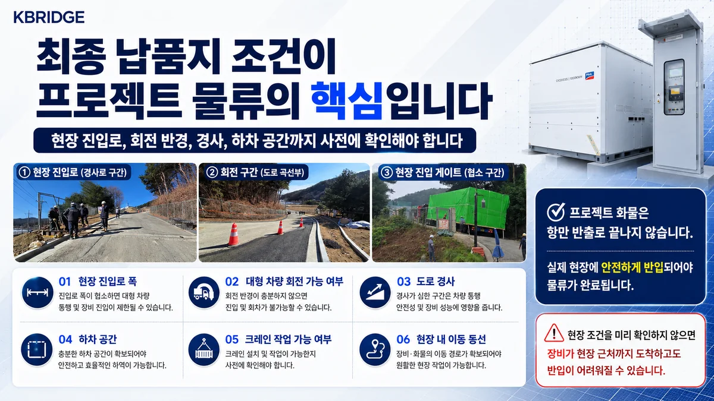
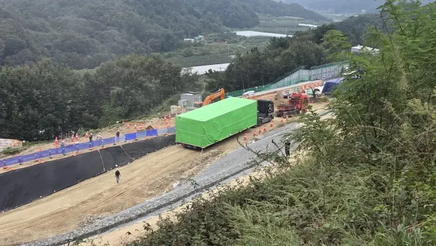
대형 차량이 이동할 수 있는 폭과 경사, 공사 구간을 사전에 확인합니다.
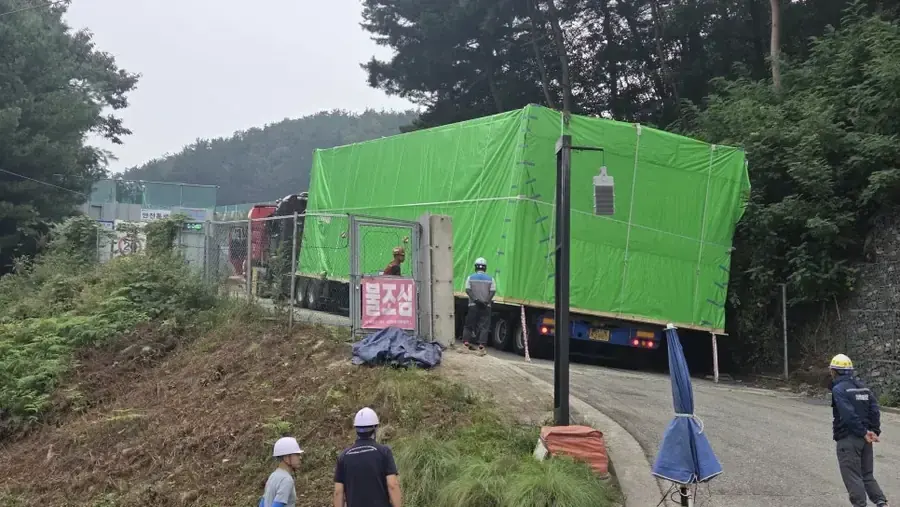
입구 구조물, 회전 각도, 작업자 배치와 안전 통제 조건을 확인합니다.
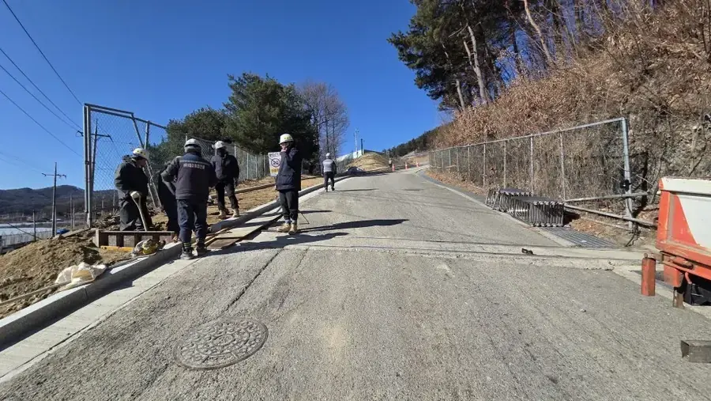
차량 하중과 도로 경사를 함께 고려해 안전한 진입 가능성을 검토합니다.
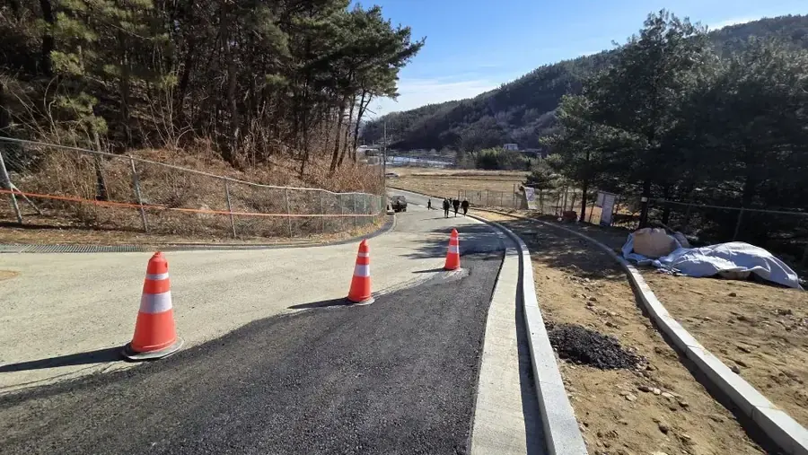
차량 길이와 커브 구조를 기준으로 실제 회전 가능 여부를 점검합니다.
최종 현장에는 진입로 폭, 경사, 회전 반경뿐 아니라 지반 상태, 하차 공간, 크레인 배치 위치, 현장 내 이동 동선, 공사 일정까지 함께 확인해야 합니다.
6. ESS 수입 전 반드시 확인해야 할 체크리스트
ESS 수입은 문제가 발생한 뒤 대응하면 프로젝트 일정 전체에 영향을 줄 수 있습니다. 아래 항목을 선적 전 단계에서 준비하면 일정 지연과 추가 비용을 줄일 수 있습니다.
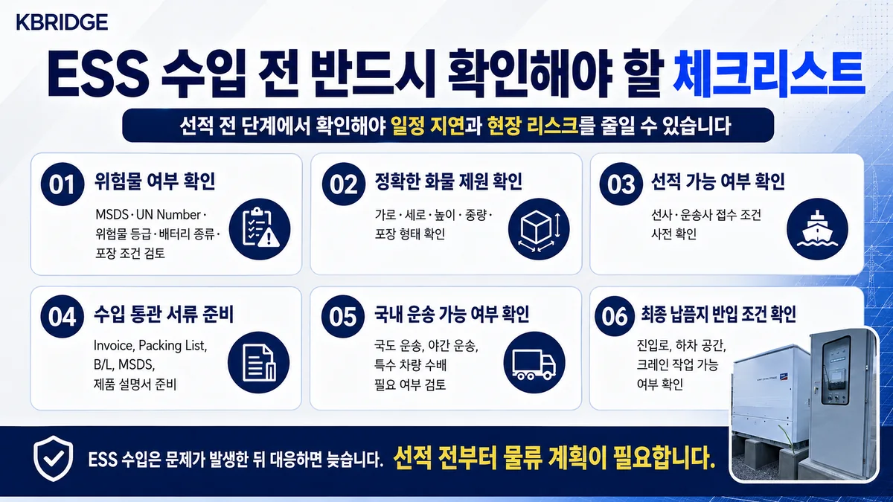
MSDS, UN Number, 위험물 등급, 배터리 종류와 포장 조건 확인
가로·세로·높이·중량·포장 형태를 실측 기준으로 확인
선사와 운송사의 위험물 및 중량물 접수 조건 확인
Invoice, Packing List, B/L, MSDS와 제품 설명 자료 준비
고속도로 가능 여부, 국도·야간 운송, 특수차량 수배 검토
진입로, 하차 공간, 크레인, 작업 가능 시간 확인
7. 케이브릿지는 ESS 수입 전 과정을 하나의 흐름으로 관리합니다
ESS 프로젝트 물류는 여러 업체가 구간별로 따로 움직이면 책임 구간이 나뉘고 일정 관리가 어려워질 수 있습니다. 케이브릿지는 수입 전 위험물·서류 검토부터 선적, 통관, 중량물 차량 수배, 국도 야간 운송, 특수장비 하역, 현장 반입과 인계까지 연결해 프로젝트 물류 리스크를 줄입니다.
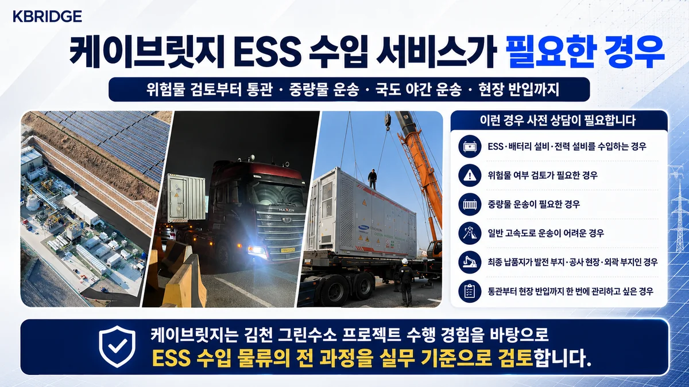
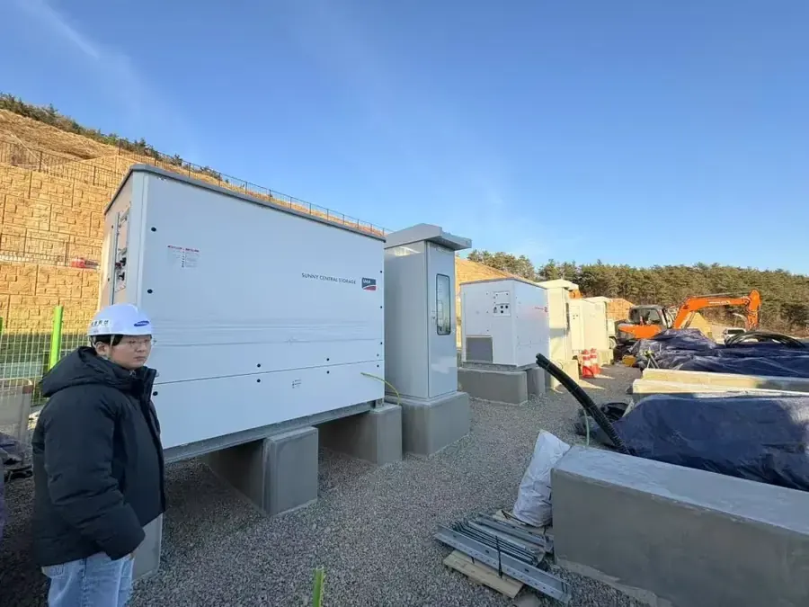
운송 이후 장비가 계획된 위치에 배치될 수 있도록 반입과 설치 공정을 연계했습니다.
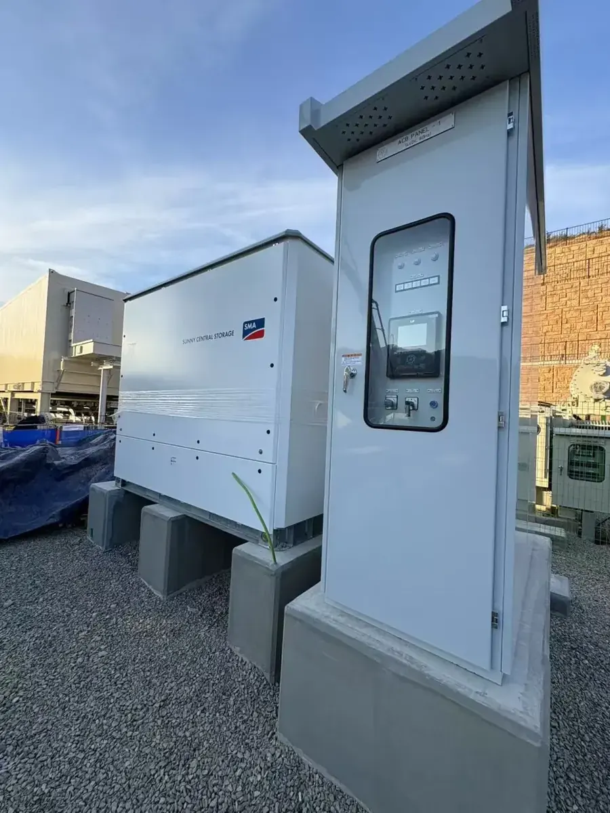
현장 담당자와 설비 상태 및 배치 위치를 확인해 프로젝트 납품을 마무리했습니다.
자주 묻는 질문
Q. 모든 ESS가 위험물에 해당하나요?
Q. 김천 프로젝트 ESS는 왜 고속도로를 이용하지 않았나요?
Q. 수입 통관부터 현장 반입까지 함께 맡길 수 있나요?
ESS 수입은 선적 전에 전체 물류 계획부터 확인해야 합니다
화물 특성, 위험물 여부, 선적 조건, 통관 서류, 중량물 운송 가능성, 국도 야간 운송, 최종 현장 반입 계획까지 케이브릿지가 실무 기준으로 검토합니다.